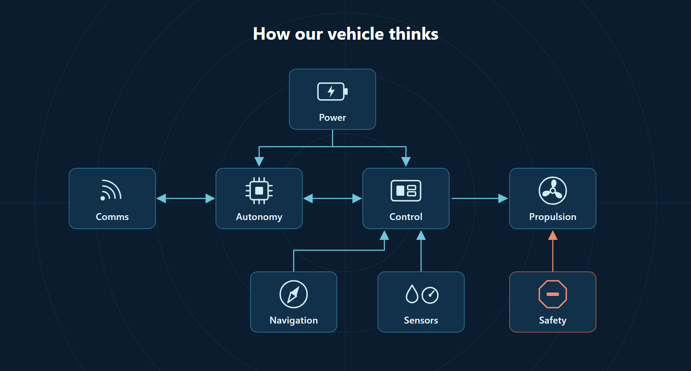
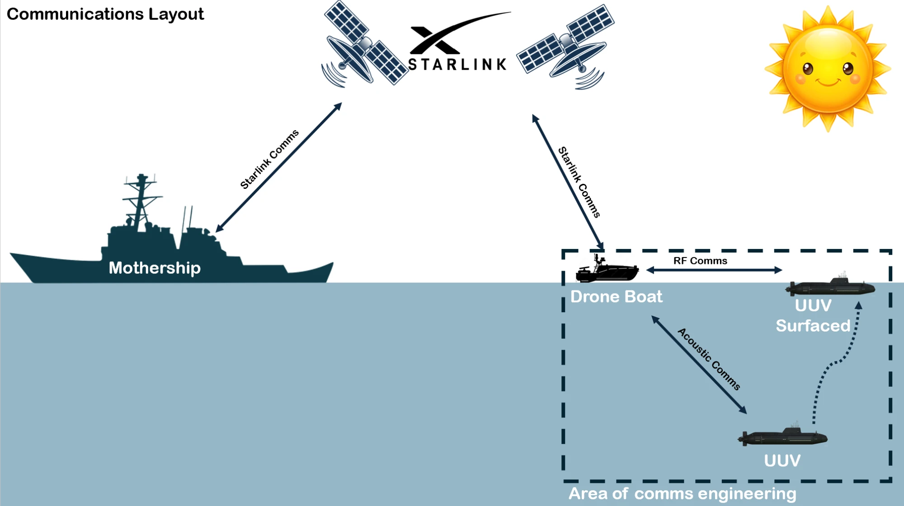
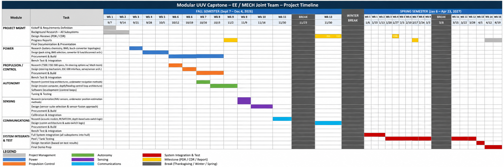
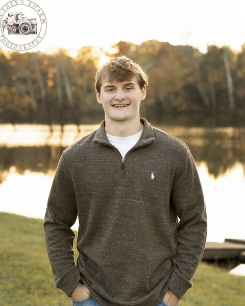

3D-Printed Shell
Rapidly iterated, repairable outer body that houses swappable payload and sensor modules.
Auburn University · Senior Design Capstone · Team 14
An 8 to 10 ft class unmanned underwater vehicle built around a 3D-printed modular shell and an aluminum pressure hull, engineered for autonomous missions with acoustic communication.
01 · Concept
Our capstone project designs a mid-size unmanned underwater vehicle (UUV) that balances the payload capacity of larger platforms with the flexibility and low cost of additive manufacturing. A rigid aluminum pressure hull protects the electronics and battery systems at depth, while an outer 3D-printed modular shell shapes the hydrodynamics and lets us swap payload and sensor bays without redesigning the core vehicle.
The vehicle is intended to run autonomous missions such as surveying, data collection, and station-keeping, while staying reachable through acoustic communication underwater and RF/Satcom links at the surface. The modular architecture keeps the platform serviceable, repairable, and upgradeable across mission profiles.
Rapidly iterated, repairable outer body that houses swappable payload and sensor modules.
Rigid, corrosion-resistant core that keeps electronics and power dry under pressure.
Onboard autonomy for surveying and station-keeping, with operator override on demand.
Underwater acoustic link for command and telemetry, with RF/Satcom at the surface.
02 · Specifications
All figures are preliminary design targets and subject to change as the project develops.
03 · Progress
Status as of October 2026 — design and software foundations are in place, with the vehicle proven in simulation and hardware-in-the-loop testing.
04 · Architecture
Power feeds the vehicle's computers. Autonomy plans the mission, Control turns it into thruster commands using navigation and sensor data, and an independent safety path can stop propulsion at any time.

Navigation, mission planning and health monitoring run onboard, with operator override through the comms link.
Real-time embedded firmware reads the sensors and drives the thruster on our custom control board.
Layered protection with independent software and hardware stop paths that can halt propulsion.
05 · Modular Design
The vehicle is organized into discrete sections along its length. Each section of the 3D-printed shell can be printed, tested, and replaced independently, wrapping around the continuous aluminum pressure hull that runs through the core.
Forward payload bay for sonar, cameras, and mission-specific sensors.
Aluminum core housing avionics, autonomy compute, and the battery pack.
Acoustic transducer plus RF/Satcom hardware for surfaced links.
24 V electric thruster and control surfaces at the tail section.
06 · Communications
How the UUV stays in contact with the mission team, both underwater and at the surface. Design is in progress and subject to change.

The mothership reaches the operating area over a Starlink satellite link.
A surface drone boat near the UUV relays traffic between the vehicle and the mothership through Starlink.
While diving, the UUV communicates with the drone boat through acoustic comms.
When the UUV surfaces, it switches to a higher-bandwidth RF link with the drone boat.
Our team's comms engineering covers the drone boat ↔ UUV links (acoustic and RF), shown inside the dashed box.
07 · Schedule
Our capstone schedule spans Capstone 1 (Fall 2026) through Capstone 2 (Spring 2027), ending with the close of the spring semester on April 23, 2027.

Gantt screenshot goes here — addimages/UUV_Capstone_Gantt_Chart_Google_Sheets_Web_HighRes.png
View the full Gantt chart →
08 · The Team
Electrical & Computer Engineering · Auburn University
Interested in electromagnetic and power engineering. Plans to do research in RF engineering and eventually move into management.

Interested in controls and power engineering. Plans to work in the power industry after graduation.
Interested in control systems and electromagnetism. Research has focused on sensor systems and electromagnetic interference.
Enjoys sensor work, robotics, and the field of nuclear power.
Enjoys hardware design for both digital and RF applications. Plans to enter the workforce after his senior year.